Zephyr 是一款 Mihomo 桌面客户端。这份案例是它的 iOS 与 Android 版本的前端设计：从用户调研到 25 个可交互状态，覆盖首页、指令、节点、规则、锁屏、小组件和通知。
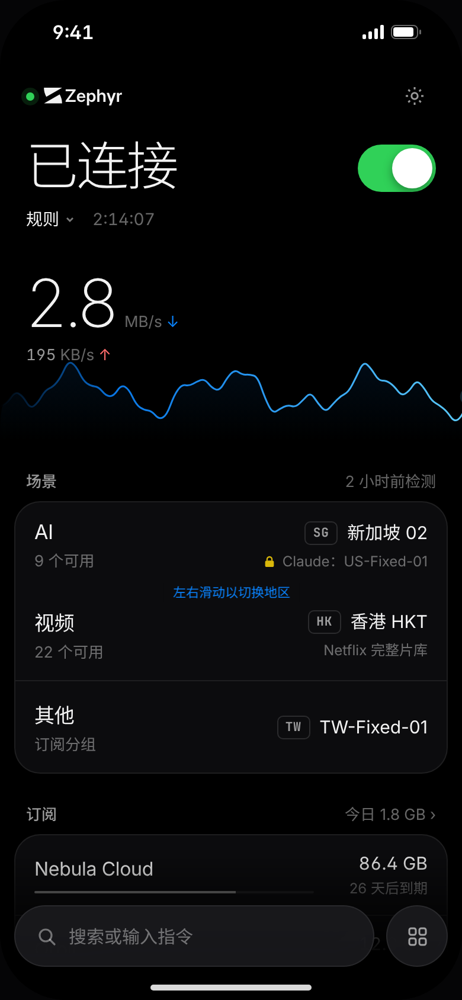
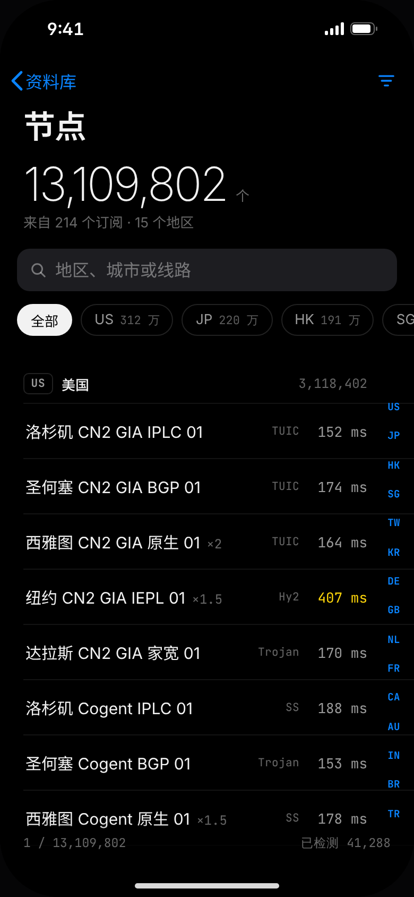
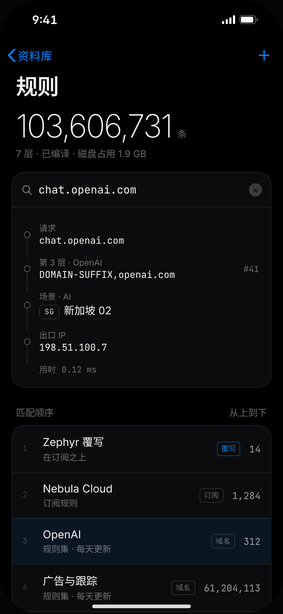
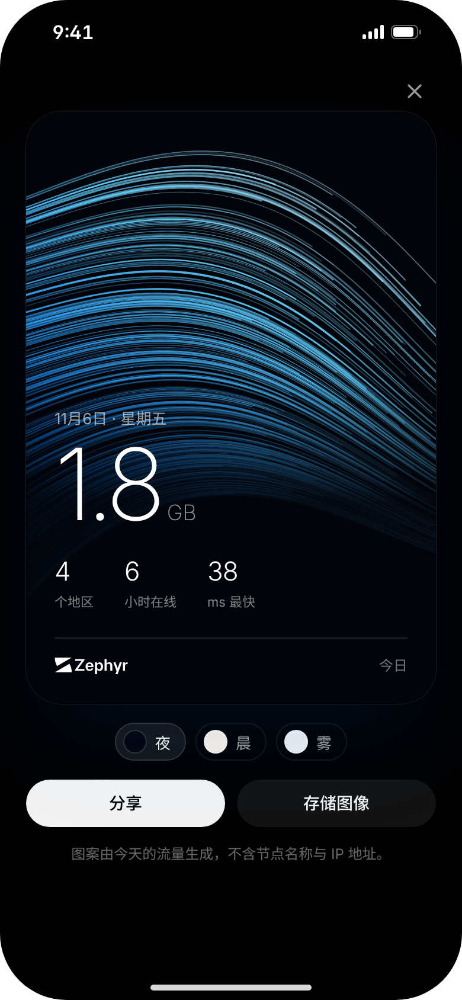
桌面用户一直在问移动版。上一版原生尝试用的是系统默认组件和一套分叉的颜色，看起来不像 Zephyr。这一次从头设计交互，只保留桌面版的气质：克制、精确、专业。
覆盖 9 款主流代理客户端的应用商店评论，以及 GitHub issues 和中文论坛讨论。低星评论按主题归类，作为后续每个设计决定的依据。
首页只回答三件事：连上没有、网速多少、每类流量从哪里出去。按服务分场景，而不是按节点列表。
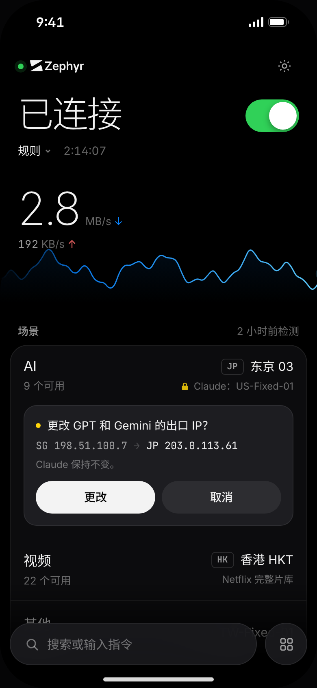
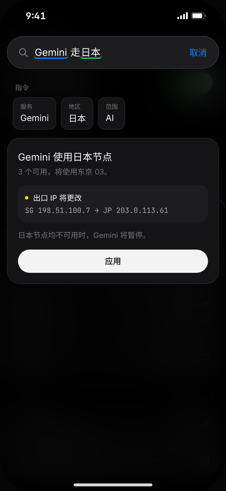
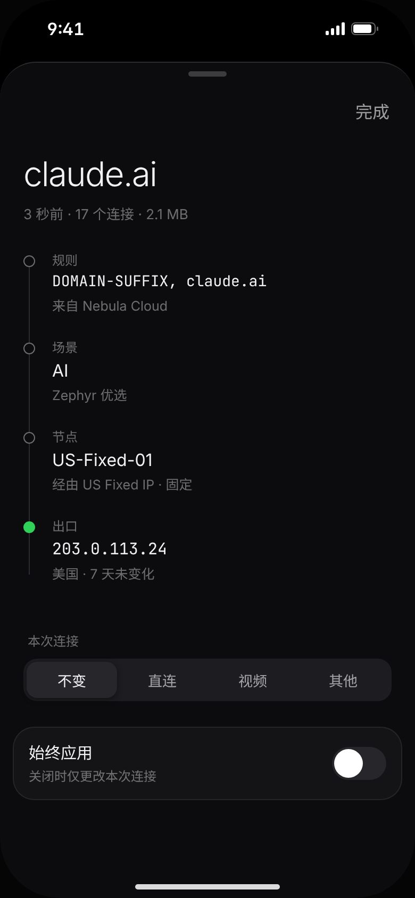
节点列表只渲染可见的十几行；右侧索引直接跳到地区；搜索走索引，不逐个扫描。规则编译成只读索引，放在磁盘上按需读取。输入一个域名，就能看到它命中第几层、哪条规则、从哪个 IP 出去。
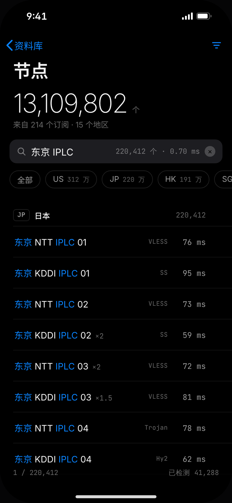
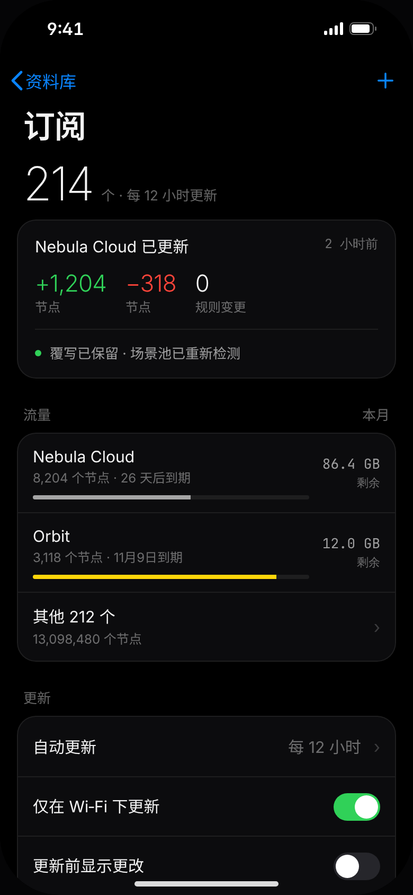
调研里，控制中心和小组件是很多人每天的主入口。锁屏、主屏、通知栏只放状态和一个动作，不放装饰。
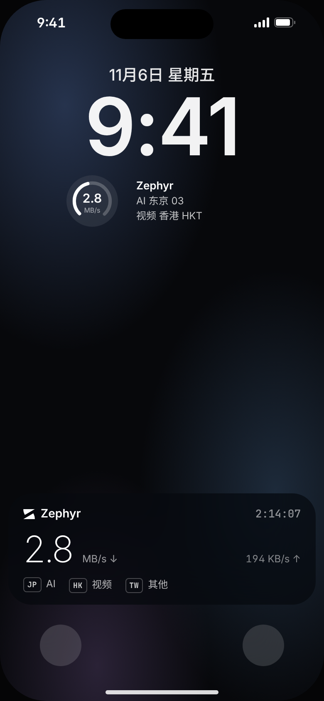
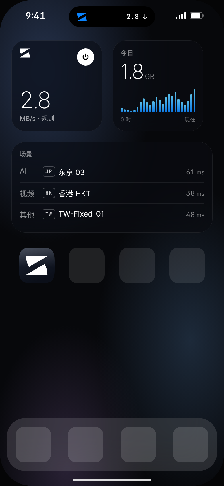
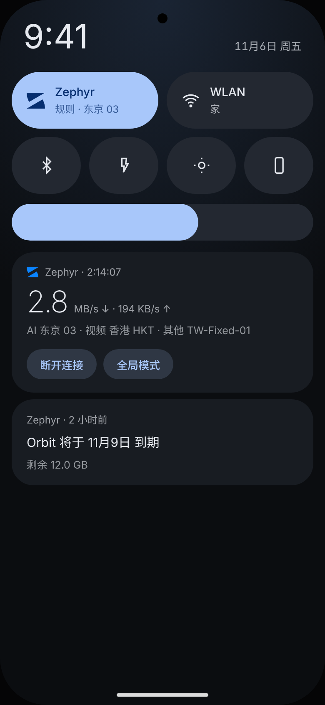
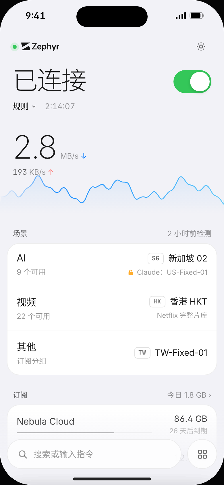
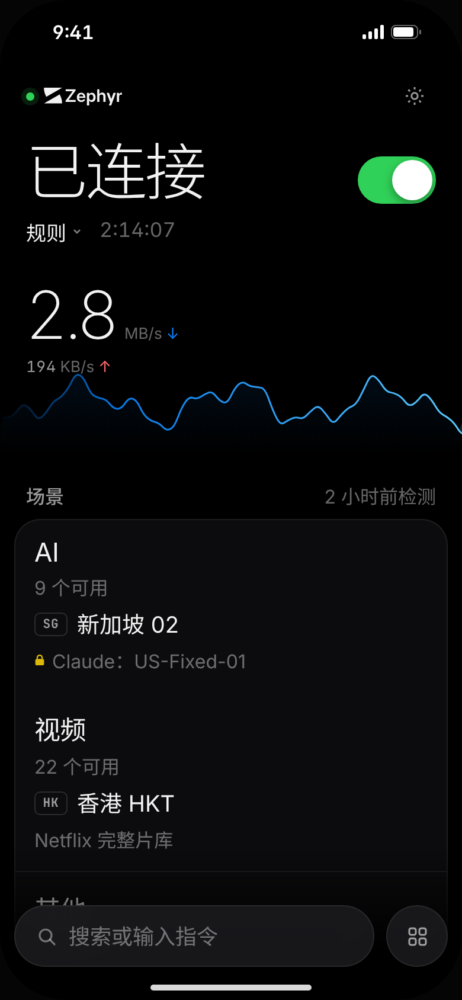
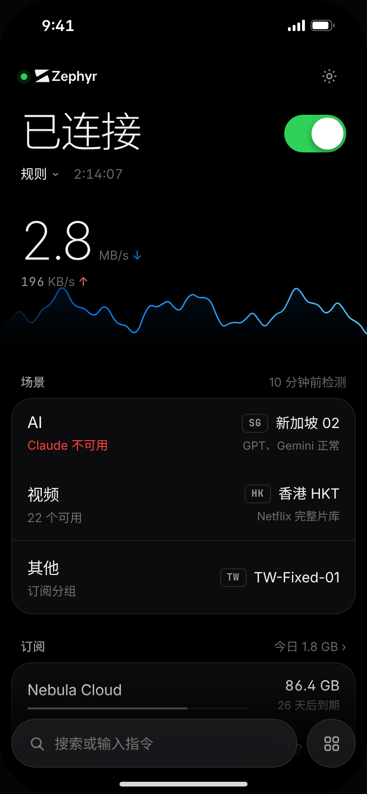
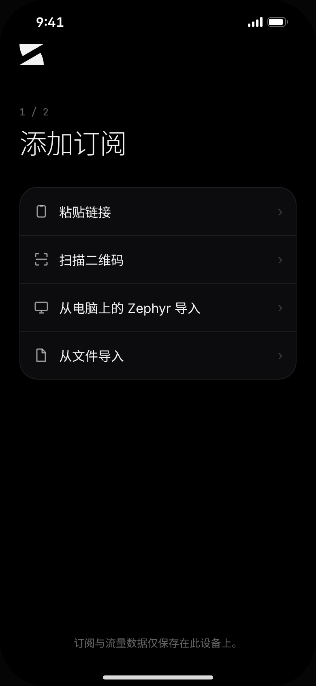